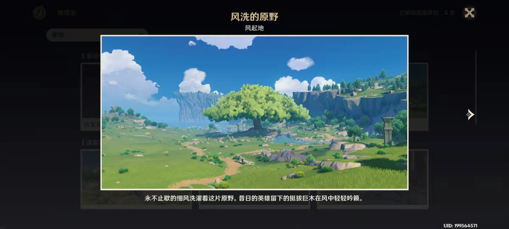
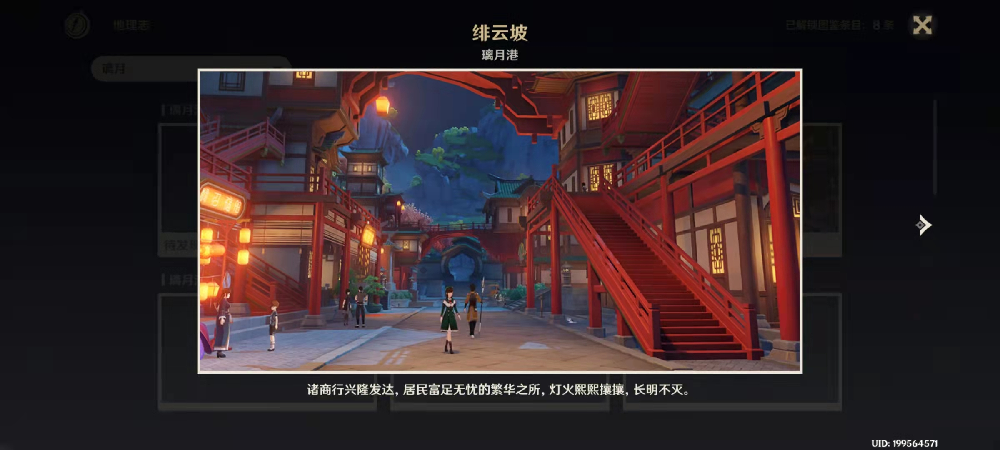
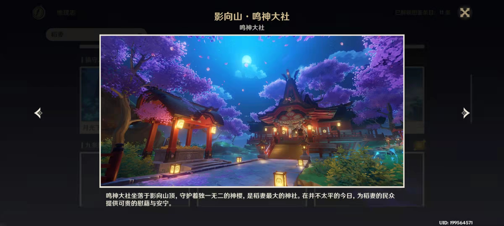

原神
在七种元素交汇的大陆——「提瓦特」，每个人都可以成为神。
你从世界之外漂流而来，降临大地。在这广阔的世界中，你自由旅行、结识同伴、寻找掌控尘世元素的七神，直到与分离的血亲重聚，在终点见证一切旅途的沉淀。
维系者正在死去，创造者尚未到来。面对无法掌控的境遇，人类总会喟叹自身的无力…… 但在人生最陡峭的转折处，若有凡人的渴望达到极致，神明的视线就将投射而下。 当失散的双子在尘沙中重聚、世界的谜底在「神之眼」中尽数显现之时—— 旅行者，你将去往何方？ 《原神》是由米哈游自主研发的一款全新开放世界冒险游戏。游戏发生在一个被称作「提瓦特」的幻想世界，在这里，被神选中的人将被授予「神之眼」，导引元素之力。
你将扮演一位名为「旅行者」的神秘角色，在自由的旅行中邂逅性格各异、能力独特的同伴们，和他们一起击败强敌，找回失散的亲人——同时，逐步发掘「原神」的真相。旅途中也有各式各样的风景。
永不止歇的风洗涤着这片原野。昔日的英雄留下的挺拔巨木在风中轻轻吟籁。

诸商行兴隆发达，居民富足无忧的繁华之所，灯光熙熙攘攘，长明不灭。

鸣神大社坐落于影向山顶，守护着独一无二的神樱，事稻妻最大的神社。在并不太平的今日，为稻妻的民众提供可贵的慰籍与安宁。
